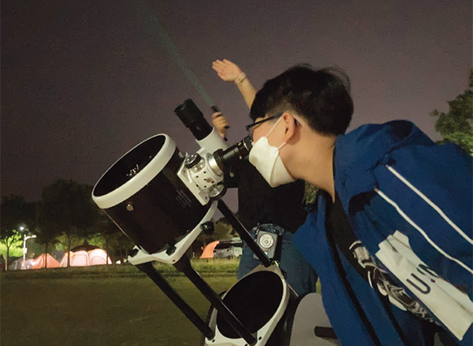
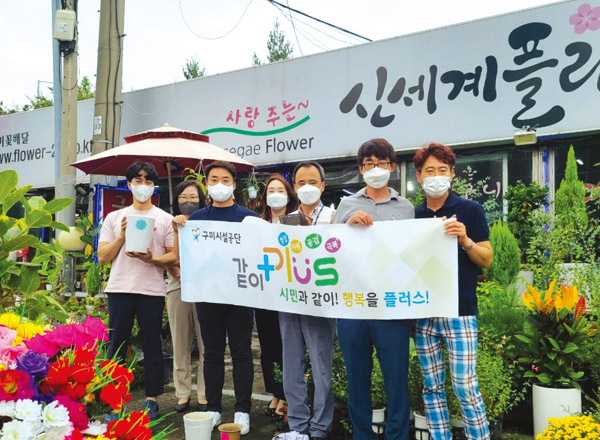
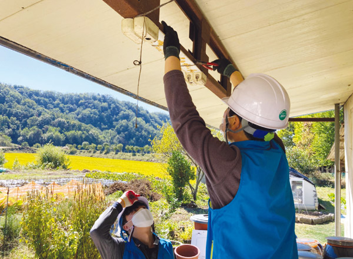
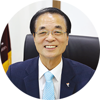

부의 양극화, 세대 갈등, 코로나19로 인한 취약계층의 고립 등 다양한 사회 문제가 대두되고 있다. 이러한 상황 속에서 구미시설공단은 “시민과 같이! 행복을 플러스!”를 모토로 지방공기업 최초로 사회공헌 활동 사업 브랜드인 「같이 Plus+」를 선포하여 지역 사회와의 협력을 바탕으로 사회적 가치 창출 경영에 힘쓰고 있다.
글 정원희(구미시설공단 기획전략팀 주임)
「같이 Plus+」 출범-지역 사회문제 해결을 위해 다 같이 손을 맞잡다
정부의 핵심 국정과제로 공공기관의 사회적 가치 실현에 대한 중요성이 강조되고 기존의 ‘경영 효율성’ 에서 지역 사회와의 소통과 협력을 바탕으로 하는 ‘사회적 가치 확산’으로 경영의 패러다임이 변화하고 있다.
구미시설공단(이하 공단)은 2020년 지방공기업 최초로 사회적 가치 브랜드인 「같이 Plus+」를 선포하였으며, 총 19개 기관과의 협력 네트워크를 구축하였다. 다양한 분야에서 전문성을 지닌 기관과의 협력·연계를 바탕으로 같이 지원+, 같이 성장+, 같이 공감+, 같이 극복+라는 총 4개의 테마 사업을 실시하며 지방공기업으로서 책임경영을 실현하고 있다.
구미시설공단「같이 Plus+」협력 네트워크 현황(’21년 10월 기준)
△구미시가족센터 △구미시종합자원봉사센터 △구미시장애인종합복지관 △구미노인일자리창출지원센터 △(사)문화창작집단 공터다 △대한웰다잉협회 △경상북도청소년성문화센터 △경상북도환경교육센터 △구미시지역아동센터협의회 △환경기술인협회 △(사)꿈을 이루는 사람들 △국립금오공과대학교 △한국여성인권진흥원 △(사)청년경제 연구소 경북지부 △대한적십자사 경북지사 △구미대학교 △대전보건대학교 △㈜태성종합기술 △아주스틸㈜
① 같이 지원+:소외된 사회적 약자에게 문화적·경제적 도움을 지원하다
공단은 코로나19 장기화로 사회적 약자들이 문화적, 경제적으로 어려움을 겪고 있는 데 주목했다. 이에 협력 네트워크 기관과의 협업을 통해 노년층, 장애인, 다문화가정 등을 대상으로 맞춤형 프로그램을 운영하여 다양한 문화체험의 활동기회를 제공하고 있으며 경제적 도움 역시 지원하고 있다.
먼저 올림픽기념관에서는 직원의 재능 기부 및 유휴공간을 활용하여 다문화가정 아동을 대상으로 맞춤형 배드민턴 강습을 실시하였다. 봉곡·선산도서관은 거동이 불편한 장애인 가정을 위해 무료로 도서배달 서비스를 운영하였다. 또한 선산도서관은 주요 고객이 노년층인 것에 착안해 관내 치매안심센터와 연계하여 치매예방 청춘교실을 개최하였으며, 신라불교초전지는 지역 노인복지센터와 연계하여 거동이 불편한 어르신을 대상으로 발우공양 및 향낭 만들기 체험 등을 제공하였다.
한편 공단은 다문화가정을 대상으로 다문화 예술단 공연 및 말하기 대회를 운영・지원하였다. 그리고 사내 무지개봉사단과 구미시종합자원봉사센터의 협업을 통해 농촌마을 주거환경 개선 및 방역활동을 실시하였다. 또한 경제적 어려움을 겪고 있는 청소년을 대상으로 장학금을 지급하여 학업에 집중할 수 있도록 하였다.
② 같이 성장+: 다양한 체험 제공을 통해 지역인재의 성장을 돕다
공단은 취약계층뿐만 아니라 지역 인재의 성장을 돕기 위한 프로그램도 적극적으로 운영하였다. 봉곡·선산도서관은 영유아를 대상으로 북스타트 프로그램을 운영해 생애 첫 독서경험을 쌓을 수 있도록 지원하고 있다. 구미시승마장은 지역 내 유소년을 대상으로 승마단을 운영하여 대회에 출전하는 등 성과를 거두고 있으며, 지역아동센터의 아동을 대상으로 승마 체험을 지원하고 있다. 구미캠핑장은 경상북도환경교육센터와 연계한 이동환경교실을 운영하여 만들기 체험 및 별자리 관측 기회를 제공하였다. 그 밖에도 지역 내 대학생과 취업준비생을 위한 현장실습 및 인턴제도를 운영해 직무 경험의 기회를 제공하고 있다.
그 결과 2020년 청소년 자원봉사 활동터전 부문 여성가족부 장관상 수상, 2021년 유소년승마단 영천별빛승마대회 및 전국소년체육대회 입상, 봉곡도서관 교육 기부 진로체험기관 인증 등 다양한 성과를 거두었다.
③ 같이 공감+: 행사와 서비스 운영을 통해 주민과 공감하다
코로나19로 변화된 일상은 취약계층뿐만 아니라 지역 주민에게도 큰 영향을 끼쳤다. 공단의 사업장을 비롯한 여가시설들은 일제히 운영이 중단되었으며, 집합금지명령으로 모임활동도 금지되다 보니 이른바 ‘코로나 블루’가 찾아왔다.
이에 공단은 사회적 거리두기가 완화되는 시점을 활용하여 지역 주민과 함께 정서적 교감을 나눌 수 있는 다양한 행사를 개최하였다. 신라불교초전지에서 한옥음악회와 마당극인 「아도가 남쪽으로 온 까닭은」 공연과 행복 강연 등을 진행하였으며, 도서관과 에코누리 탄소제로교육관의 다목적강당을 활용하여 무료 영화를 상영하였다. 또한 코로나19 시국에 알맞게 비대면 프로그램을 개발하여 환경 만들기 수업 운영은 물론 하수처리장의 랜선 견학영상을 배포하였다.
이러한 활동을 통해 지역 주민에겐 볼거리와 활력 제공을, 공단은 시설 홍보를, 지역 문화 예술인에게는 활동 기회를 제공하며 모두가 호혜적인 효과를 누릴 수 있었다.
④ 같이 극복+: 지역사회와 함께 코로나19를 극복하다
협력 네트워크와의 활동 외에도 코로나19 극복을 위해 공단의 직원들 역시 손을 모았다. 매주 한 팀씩 같이 극복 릴레이를 진행하며 재능 기부, 봉사활동 등 다양한 사회공헌 활동을 진행하였다.
혈액 수급에 어려움을 겪고 있는 지역 병원에 직원들이 단체 헌혈을 한 후 모은 헌혈증 300매를 기부하였으며 화훼농가와 소상공인을 돕기 위해 ‘1인 1화분 갖기’ 운동을 펼쳤다. 또한 전통시장의 활성화를 위해 명절 장보기 행사 및 점심투어를 진행하였다. 한편 기술직 직원들을 주축으로 취약가정을 방문하여 전기 안전 점검을 실시하였으며 전통시장과 경로당의 정기방역 지원, 농촌 일손 돕기를 지속적으로 진행해왔다.
그 결과 2020년 총 44회, 2021년 42회(10월 기준) 릴레이를 진행하였으며, 2020년 행정안전부 코로나19 극복 감동사례 공모전에 릴레이 활동내용을 제출하였다. 제출된 사례는 영상으로 제작되어 MBC 생방송 <오늘 저녁> 프로그램에 방영되었다.
위드 코로나와 포스트 코로나, 같이 Plus+의 방향을 고민하다
최근 전 국민 백신 접종률이 70%를 돌파함에 따라 정부는 위드 코로나 체제로 전환을 발표했다. 즉 포스트 코로나 역시 머지않은 시기가 된 것이다.
이에 코로나19로 어려움을 겪는 지역 사회를 지원하는 데 초점을 맞춰 진행되었던 같이 Plus+ 사업 역시 방향에 변화가 필요한 시점이라고 판단한 공단은 지난 11월 17일, 협력 기관과 한곳에 모여 같이 Plus+ 포럼을 진행하였다. 각 영역에서 서로 다른 전문성을 지닌 기관과 자유롭게 토론하며 새로운 협력 사업을 발굴하는 한편 이미 진행해온 사업들의 추진 성과를 점검하고 아쉬웠던 부분들을 보완하는 시간을 가졌다.
어떤 새로운 사회 문제가 발생하더라도 같이 Plus+의 모토인 “시민과 함께! 행복을 플러스!”는 변치 않을 것이다. 공단은 협력 기관들과 함께 언제나 시민의 곁에서 지역 사회에 선한 영향력을 발휘할 수 있도록 앞으로도 끊임없이 노력할 것이다.




구미시설공단 채동익 이사장
“사회적 가치 실현이란 목표에 공감한 ‘같이 Plus+’ 기관들과 협력으로 코로나19 팬데믹 상황에서도 다양한 사업을 추진할 수 있었습니다. 앞으로도 우리 공단은 협력 네트워크를 바탕으로 새로운 사업들을 계속적으로 발굴하여 시민들에게는 행복을 드리고, 기관과는 상호발전을 이루는 선순환구조를 만들어 나가겠습니다.”